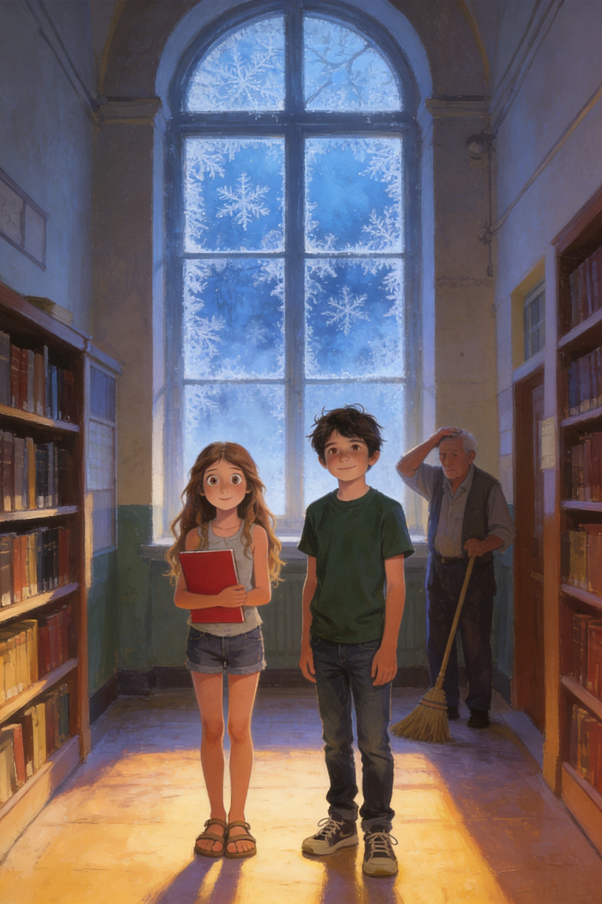
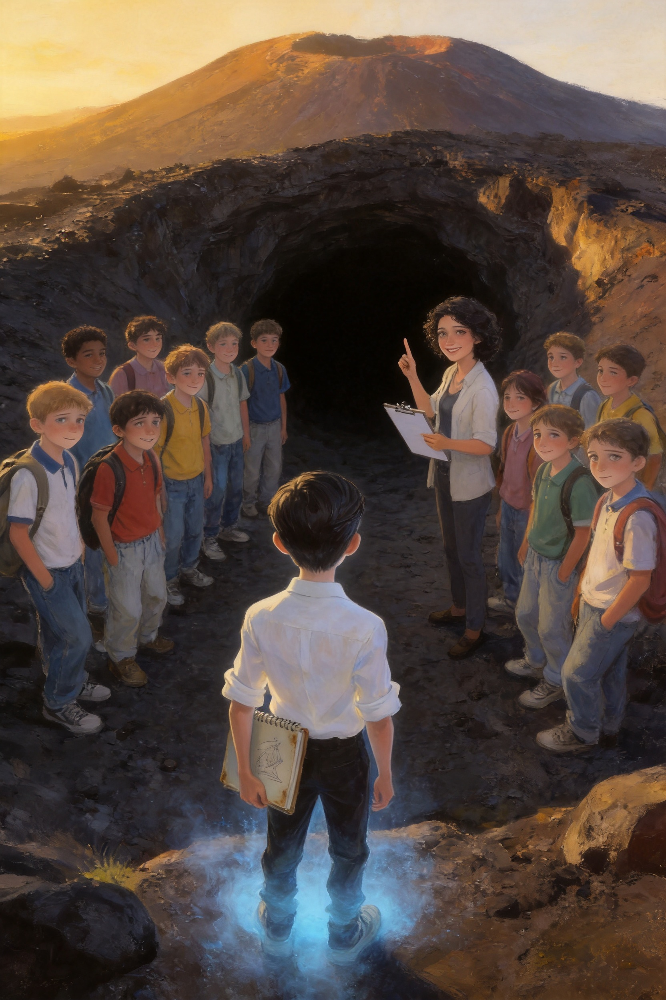

Due settimane dopo la vittoria sotto l'Etna, la scuola di Trappitello sembrava tornata normale. Il pino nel cortile, la campanella delle otto e cinque, la merenda alle dieci e cinquantacinque. Perfino Salvatore aveva ricominciato a mangiare panini di nascosto durante la lezione di tecnologia.
C'era soltanto una cosa che non tornava. Ogni mattina, quando arrivava, il signor Nino trovava una finestra coperta di brina.
— Ma da quando fa questo freddo? — borbottava, grattandosi la testa con il manico della scopa. — Siamo a metà ottobre! E il riscaldamento neanche funziona!
Il martedì mattina Vlad e Ludovica lo trovarono nel corridoio del primo piano, davanti a una finestra bianca come un panettone.
— Lo vedete anche voi? — chiese lui.
— Lo vediamo — rispose Ludovica, e aprì la cartellina rossa sotto il braccio.
La Squadra Etna aveva continuato a incontrarsi anche dopo la grotta. Il gruppo si chiamava ancora così, e nessuno aveva voglia di cambiare nome.
— Aggiorno il registro — disse Matilde, che si era autonominata cronista ufficiale. Aprì il quaderno con un gesto preciso. — Lunedì scorso: aula di musica. Martedì: le scale. Mercoledì: la palestra. Giovedì: la sala dei professori. Ieri: la bidelleria. Oggi: corridoio del primo piano.
— Sempre alle sette e cinquanta — aggiunse Thomas, che aveva appeso un termometro digitale vicino alla finestra. — E ogni volta la temperatura scende di nove gradi, in dieci minuti. Poi risale.
Wijdane si chinò sulla mappa della scuola che Aurora aveva disegnato, e tracciò una linea con il dito, da un punto all'altro.
— Guardate — disse. — Ogni giorno la finestra è più vicina alla biblioteca. Come se qualcuno stesse camminando verso di lei.
— Qualcuno? — chiese Simone.
— Qualcosa. Ci ha messo due settimane per arrivarci. E oggi ci siamo.
Vlad sentì la Piuma, sotto la maglietta, battere una volta. Piano. Come qualcuno che bussa a una porta.
La biblioteca era silenziosa. Il signor Nino aprì la porta con il suo mazzo di chiavi grande come una sveglia, e tutti entrarono in fila indiana, in punta di piedi.
Sul fondo, nella luce grigia del mattino, c'era la finestra.
Era coperta di brina, sottile e luminosa. Ma non era una brina qualunque. Aveva dei segni, piccoli e precisi, tracciati con la punta di un dito, dall'interno del vetro: una scrittura inclinata, da ragazzo, con le lettere un po' storte.
Ludovica si avvicinò. Lesse piano, una lettera alla volta.
— E... T... T... O... R... E.
Nessuno disse una parola. Un granello di polvere dorata cadde, in mezzo alla luce.
— Ettore — ripeté Vlad.
— Strano — borbottò il signor Nino, con una voce che non era più allegra. — Quella finestra l'ho pulita ieri sera. E la biblioteca era chiusa a chiave, da dentro.
Vlad toccò il vetro con il dito. Era gelido, ma sotto la brina, per un attimo, gli sembrò di sentire un'altra mano, dall'altra parte. Più piccola. Più triste.

«Quella finestra l'ho pulita ieri sera.»
— Vlad — sussurrò Ludovica, mentre gli altri si avvicinavano al vetro. — Tu quel nome l'hai già sentito.
— Non l'ho sentito. L'ho sognato.
Raccontò tutto a mezza voce. Quella notte, nel sogno, era in una caverna nera, senza pareti e senza soffitto. Su una roccia sedeva un ragazzo magro, con i capelli scuri pettinati all'indietro e un quaderno sulle ginocchia. Disegnava maschere: facce di pietra, con occhi vuoti e bocche aperte, come quelle dei teatri greci.
Il ragazzo alzò la testa. Aveva gli occhi pallidi, stanchi, di chi aspetta da tanto tempo.
— Tu mi hai visto? — chiese.
— Chi sei?
— Qualcuno che hanno dimenticato.
Vlad si era svegliato di colpo, con la finestra della camera coperta di brina e la Piuma calda sul petto. E nella sua testa, dolcissima e vecchissima, la voce aveva detto in russo:
— Он не злой. Он потерялся.
«Non è cattivo. Si è perso.»
Ludovica tirò fuori il vecchio dossier. Sulla copertina c'era ancora scritto DOSSIER S. — CHIUSO, e sotto, più piccolo, Ma chi?
Lei cancellò con la penna le due ultime parole e scrisse al loro posto, in stampatello:
ETTORE.
— Primo punto — disse. — Dobbiamo scoprire chi è. Secondo punto: dove è finito. Terzo punto: perché sono vent'anni che nessuno si ricorda di lui.
— Vent'anni? — chiese Vittoria. — Come lo sai?
— Perché la foto della biblioteca era di vent'anni fa. E il ragazzo in fondo, quello che non sorrideva...
— ...aveva i capelli all'indietro — disse Vlad, piano. — Come nel mio sogno.
Wijdane annuì lentamente.
— Gli archivi della scuola sono in cantina — disse. — Possiamo cercare i vecchi registri.
— E io ho le chiavi — disse il signor Nino, e poi, notando che tutti lo guardavano, si schiarì la voce. — Cioè... non so di cosa parliate. Ma se me lo chiedete bene, potrei anche trovarle.
Nell'atrio risuonarono dei passi. Era la professoressa Siligato, con la borsa piena di quaderni e una sciarpa chiara avvolta due volte intorno al collo. Aveva le occhiaie, e camminava piano, come se avesse dormito poco.
— Buongiorno, ragazzi — disse. — Che ci fate tutti qui, prima della campanella?
Nessuno rispose. Si limitarono a farle spazio, davanti alla finestra.
La prof Siligato guardò il vetro. Per un lungo istante non si mosse. Poi la borsa le scivolò dalle mani e cadde a terra con un tonfo, spargendo quaderni sul pavimento.
— Ettore — sussurrò.
Le tremavano le labbra. Si portò una mano alla bocca, e le lacrime le scesero lungo le guance, senza rumore.
— Non lo dicevo ad alta voce da vent'anni.
Vittoria fu la prima a muoversi. Raccolse i quaderni, li mise nella borsa, e poi le prese la mano.
— Prof — disse con la sua voce dolce. — Ci racconti.
La professoressa si asciugò gli occhi con il dorso della mano. Respirò a fondo, e poi sorrise, un sorriso piccolo e stanco.
— Dopo la sesta ora — disse — in biblioteca. Tutti voi. Vi devo raccontare una storia che non ho mai raccontato a nessuno.
— A nessuno? — chiese Ludovica.
— A nessuno, in vent'anni.
La campanella suonò, fuori dalla biblioteca, e il corridoio si riempì di voci e passi. La prof raccolse la sua borsa e se ne andò lentamente, con la schiena un po' più dritta di prima.
Vlad restò un momento davanti alla finestra. Il sole era salito sopra il tetto, e la brina cominciava a sciogliersi. Le lettere sparirono una dopo l'altra, come ricordi che si dimenticano.
Tutte, tranne una. La prima, la «E», rimase sul vetro, intatta e luminosa, come se il sole non riuscisse a toccarla.
Vlad appoggiò il palmo sul vetro, dall'altra parte.
— Ti abbiamo visto — disse piano. — Ti abbiamo visto, Ettore.
✦ ✦ ✦
Il Custode dell'Etna · Libro 2
Capitolo 2
La gita di vent'anni fa
✦ ✦ ✦
Dopo la sesta ora, la biblioteca sembrava più piccola del solito. Ventuno ragazzi, una professoressa e un bidello si strinsero intorno al grande tavolo di legno, con le sedie accostate e le lampade accese.
La prof Siligato aveva portato un registro dalla copertina grigia, tenuto insieme da un elastico. Lo posò sul tavolo, accanto alla vecchia cornice con la foto. Per un po' non parlò. Fuori, la luce del pomeriggio disegnava un rettangolo dorato sul pavimento.
— Vent'anni fa — cominciò — avevo trentasette anni, ed ero convinta di sapere contare.
Fece un piccolo sorriso triste.
— Insegnavo italiano in una seconda media. La 2ª A. Quattordici ragazzi. Quattordici, ve lo dico subito, perché è un numero che non dimenticherò mai.
— Uno di loro si chiamava Ettore Marenzi. Era magro, silenzioso, con i capelli pettinati all'indietro e un quaderno sempre sotto il braccio. Disegnava. Disegnava soprattutto maschere: quelle del teatro greco, con le bocche aperte e gli occhi vuoti. Suo padre lo portava ogni estate al Teatro Antico di Taormina, e lui conosceva ogni gradino, ogni colonna, ogni pietra.
— Voleva fare lo scenografo? — chiese Aurora.
— Voleva costruire teatri. — La prof sorrise di nuovo. — Era il ragazzo più gentile che abbia mai avuto. Faceva il ritratto a tutti, senza chiedere niente. Ma era anche solo. Gli altri lo chiamavano «il Maschera». Non per cattiveria, o non solo. Ma lui non rispondeva mai. Abbassava gli occhi, e disegnava.
Vlad sentì una stretta al petto. Conosceva quella sensazione: un banco in fondo, una lingua che non è la tua, e nessuno che ti chiama.
Ludovica gli prese la mano, sotto il tavolo, senza dire niente.
— Un giorno — continuò la prof — organizzai una gita alle grotte dell'Etna. Le stesse dove siamo stati noi, un mese fa.
— Partimmo di mattina, con il pullman. Li contai, uno a uno, alla partenza: quattordici. Li contai all'ingresso della grotta: quattordici. Il cielo era limpido e tutti erano contenti.
— Ma c'era qualcosa che io non sapevo. Alcuni ragazzi, quella mattina, avevano organizzato una «prova di coraggio». Chi si fosse spinto più a fondo nella grotta e fosse tornato con un sasso nero in mano, avrebbe vinto. Non so chi l'aveva proposta. Non l'ho mai saputo.
— E Ettore? — chiese Vittoria.
— Lo sfidarono. Gli dissero che, se ci fosse riuscito, non l'avrebbero più chiamato «il Maschera». Lui accettò, perché voleva davvero essere uno di loro.
Nella biblioteca nessuno respirava.
— Entrò da solo, mentre la guida spiegava la lava agli altri. Sparì dietro una curva con la sua lampada. E non tornò più.
Il signor Nino, seduto in fondo, abbassò lo sguardo.
— All'uscita iniziò a piovere — disse la prof. — Dovevamo fare in fretta, perché il pullman aveva l'orario. Li feci mettere in fila. E li contai.
Tese le mani sul tavolo, come se stesse contando ancora.
— Uno, due, tre... tredici. Ricominciai. Tredici. Mi mancava qualcuno. «Dov'è Ettore?», chiesi. E uno di loro rispose: «È già sul pullman, prof». E un altro: «L'ho visto salire io». Altri due annuirono.
— Mentivano — mormorò Wijdane.
— Mentivano. E io, che ero stanca e bagnata, e avevo paura di fare tardi, volevo credere a loro. Salii sul pullman senza controllare.
Si asciugò gli occhi con il dorso della mano.
— Ho scoperto che lui non c'era solo quando siamo arrivati a scuola, due ore dopo.

Quattordici. Poi tredici.
— Tornammo subito alle grotte. Quella notte, e per molte notti, cercarono tutti: i vigili del fuoco, i volontari, il signor Nino, che allora era appena arrivato a scuola.
Tutti si voltarono verso il bidello. Lui annuì, senza parlare, con gli occhi bassi.
— Cercammo per giorni. Trovarono solo una cosa, sul bordo di una fessura molto profonda: una matita, con il nome inciso sopra. Nessun altro segno. Ettore sparì, e il suo caso fu chiuso come «scomparso».
— E gli altri? — chiese Simone. — Quelli che mentirono?
— Dissero tutti di non aver visto niente. Che era stato un incidente. Che lui era entrato da solo. E avevano tredici anni, ed erano spaventati. E io... — la voce le si spezzò — io li ho lasciati dire. Perché non volevo sapere che avevo contato male.
Vittoria le strinse la mano più forte.
— Ogni autunno, da vent'anni — disse piano la prof — prendo in prestito il libro delle leggende. Cerco una storia in cui chi sparisce dentro l'Etna torna. Non l'ho mai trovata.
Nessuno parlò per un po'. Fu Mia a rompere il silenzio, con un filo di voce.
— Allora è Ettore, il fantasma. Quello che ha usato lei.
— Credo di sì. — La prof annuì. — Non so come, ma credo che sia uscito dalla montagna dopo vent'anni, e abbia cercato qualcuno che ricordasse. Io ero la prima. Ero quella che aveva contato male.
— Non è stata colpa sua — disse Vlad.
— Lo ripeto da vent'anni. — Lei sorrise, con gli occhi lucidi. — E non ci credo ancora.
Aprì il vecchio registro e lo girò verso Vlad, con un dito sulla prima pagina. C'erano quattordici nomi, scritti con la sua calligrafia ordinata.
— Qui ci sono tutti. Anche quelli che mentirono. Sono adulti, adesso. Alcuni abitano ancora qui. — Alzò lo sguardo. — Ma ricordate: erano ragazzi di tredici anni. Hanno fatto una cosa stupida, e poi una bugia. Non sono mostri.
Il signor Nino si alzò. Andò a un armadietto in fondo alla biblioteca, rovistò in un cassetto e tornò con una piccola busta di carta ingiallita.
— L'ho conservata io — disse. — Perché non sapevo cosa farne, e perché non volevo buttarla.
Dentro c'era una matita. Corta, consumata, con un nome inciso sopra a lettere minuscole: E. Marenzi.
Vlad la prese. La matita era gelida, come se fosse appena uscita da un ghiacciaio. Il ciondolo sul petto gli bruciò, e per un istante gli sembrò di sentire, molto lontano, una voce di ragazzo.
— Tu mi hai visto?
Sul registro aperto, accanto a un nome scritto con la calligrafia della prof, apparve una piccola macchia di brina. Aveva la forma di una maschera: una faccia di pietra, con gli occhi vuoti e la bocca aperta.
— Come quelle del Teatro Antico — sussurrò Ludovica.